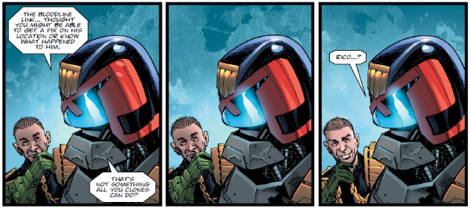

As part of Chief Judge Logan's roll-out of the Mechanismo program, human street Judges are often paired with a mechanoid partner. Patsy and Wrexler are one such odd couple, who provide a buddy cop dynamic with some great fish-out-of-water moments as Patsy tries to make sense of the eccentricities of humanity.
Art by Staz Johnson & Chris Blythe
| Story Title | Parts | Pages | w indicates a wraparound coverCovers | Year(s) | Issues | Writer | Artist | Colourist | Letterer |
|---|---|---|---|---|---|---|---|---|---|
From Judge DreddThe Samaritan | 4 | 24 | 0 | 2019 | 2136-2139 | Kenneth Niemand | Staz Johnson | Chris Blythe | Annie Parkhouse |
From Judge DreddKill Bloopy | 4 | 24 | 0 | 2020 | 2163-2166 | Kenneth Niemand | Dan Cornwell | Jim Boswell | Annie Parkhouse |
From Judge DreddCold Case | 1 | 6 | 0 | 2020 | 2169 | Kenneth Niemand | Tom Foster | Chris Blythe | Annie Parkhouse |
From Judge DreddSimply Normal | 5 | 30 | 2207: Cliff Robinson & Dylan Teague 2211: Steven Austin & Chris Blythe 2 | 2020 | 2207-2211 | Kenneth Niemand | Steven Austin | Chris Blythe | Annie Parkhouse |
| year | episodes | pages |
| 2002 | 0 | 0 |
| 2003 | 0 | 0 |
| 2004 | 0 | 0 |
| 2005 | 0 | 0 |
| 2006 | 0 | 0 |
| 2007 | 0 | 0 |
| 2008 | 0 | 0 |
| 2009 | 0 | 0 |
| 2010 | 0 | 0 |
| 2011 | 0 | 0 |
| 2012 | 0 | 0 |
| 2013 | 0 | 0 |
| 2014 | 0 | 0 |
| 2015 | 0 | 0 |
| 2016 | 0 | 0 |
| 2017 | 0 | 0 |
| 2018 | 0 | 0 |
| 2019 | 4 | 24 |
| 2020 | 10 | 60 |
| 2021 | 0 | 0 |
| 2022 | 0 | 0 |